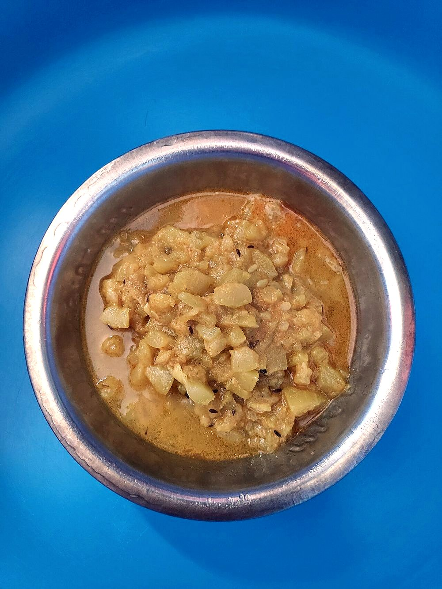

Contains: milk
Checked against the ingredient list for milk, egg, fish, crustaceans, tree nuts, peanuts, sesame, mustard, soy and gluten. Nothing else is checked, and brands vary, so read the label on anything you have not bought before.
Ingredients
Quantities for 4.
- 700g, peeled and cut into 4cm batons Bottle Gourdchoose a young gourd with soft seeds
- 400g, full fat, whisked completely smooth Yogurt
- 3 tbsp Ghee
- 2 tsp Fennel Powder
- 1 tsp Dry Ginger Powder
- 1/4 tsp Asafoetidause compounded-free hing to keep this gluten-free
- 3, bruised Cardamom
- 3 Cloves
- 1 Bay Leafoptional
- 1 tsp, crushed between the palms Kasuri Methistirred in at the endoptional
- 1/2 tsp, coarsely ground Black Pepperoptional
- to taste Salt
- 200ml Water
Cookware
stovetop
Before you start
- Take the yogurt out of the fridge 45 minutes ahead and whisk it until it is as loose as cream, with no lumps at all.
- Cut the gourd into thick batons rather than thin slices; thin pieces collapse into the gravy within minutes.
- Measure the fennel and dry ginger into the yogurt before cooking so they go into the pan together, already dispersed.
Method
- Whisk the fennel powder, dry ginger powder and salt into the yogurt and keep it beside the stove.
- Heat the ghee in a heavy pan over medium heat and add the cardamom, cloves and bay leaf; they should sizzle and perfume the fat within 20 seconds.
- Add the asafoetida, count to three, then add the bottle gourd batons.Hing goes from fragrant to acrid in about five seconds. Do not step away.
- Turn the gourd in the ghee for 4 minutes until the edges look glassy.
- Lower the heat right down, pour in the spiced yogurt and stir continuously in one direction until it comes to a bare simmer, about 5 minutes.Keep stirring the whole time and never cover the pan before it simmers, or the yogurt will split into curds and whey.
- Add the water, bring back to a simmer and cook uncovered for 12 minutes, until the gourd is tender but still holds its shape.
- Crush the kasuri methi between your palms over the pan and add the black pepper.
- Simmer 3 minutes more until the gravy coats the back of a spoon thinly, then taste for salt.Yakhni should be the colour of thin cream. If it has gone beige you have over-fried the spices.
- Rest off the heat for 5 minutes before serving with plain rice.
Storage
Keeps 2 days refrigerated. Reheat very gently over low heat, stirring; it will look thin at first and come back together as it warms. Do not freeze.
Nutrition Low estimate
| Per serving289 g | Per 100 g | |
|---|---|---|
| Calories | 185+ kcal | 64+ kcal |
| Protein | 5.3+ g | 2+ g |
| Carbohydrate | 13.3+ g | 5+ g |
| of which sugars | 4.7+ g | 2+ g |
| Fibre | 2.4+ g | 1+ g |
| Fat | 13.3+ g | 5+ g |
| of which saturated | 8.1+ g | 3+ g |
| of which unsaturated | 4.4+ g | 2+ g |
The + means ingredients given to taste rather than by weight are counted as zero, so the true figure is a little higher than shown. A rough guide only. A large part of this ingredient list is given to taste rather than by weight, or much of what is weighed is not eaten. Ingredients given to taste rather than by weight are counted as zero, so the real figure is a little higher than this. The + says so. Some ingredients have no exact match in the nutrient database and use the nearest equivalent: asafoetida. Estimated from raw ingredients using USDA FoodData Central. Cooking changes are not modelled, and added salt is excluded, so sodium is not given.
Written and checked against sources, not cooked in a test kitchen. Times, yields and keeping times are guides, and the allergen and nutrition figures are worked out from the ingredient list rather than measured. Use your own judgement, particularly on doneness and on anything you are storing or reheating. More in About.